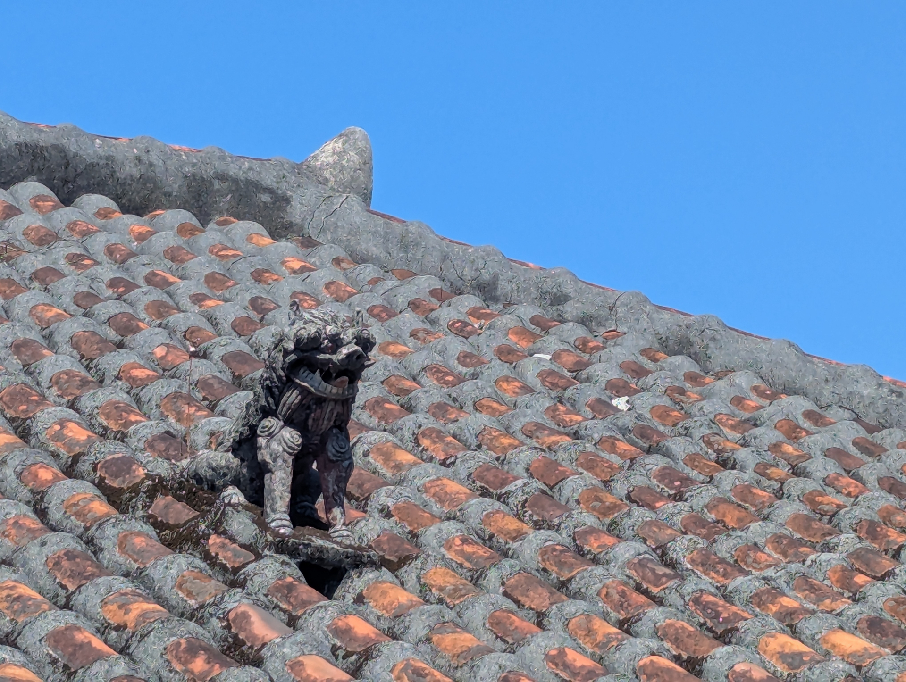

琉球のことばと日本語は、同じ祖先の言語（日琉祖語）から分かれたと考えられている。単語の形や音の対応が規則的にたどれることが根拠である。たとえば沖縄語では、日本語の「エ」が「イ」に、「オ」が「ウ」になる対応が広く見られる（雨 あめ→あみ、心 こころ→くくる）。
一方で、琉球諸語には奈良時代の日本語にもない古い区別が残っている例があり、琉球諸語は日本語から分かれたのではなく、日本語と姉妹の関係にあるとみるのが一般的である。
琉球諸語は、沖縄本島と宮古島の間で大きく北琉球と南琉球に分かれる。2009年にユネスコが公表した『消滅危機言語地図』は、日本の8言語の中に琉球列島の次の6つを挙げた。
| 言語 | 地域 | 危険度 |
|---|---|---|
| 奄美語 | 奄美大島・徳之島など | 危険 |
| 国頭語 | 沖永良部島・与論島・沖縄本島北部 | 危険 |
| 沖縄語 | 沖縄本島中南部と周辺の島 | 危険 |
| 宮古語 | 宮古諸島 | 危険 |
| 八重山語 | 八重山諸島 | 重大な危険 |
| 与那国語 | 与那国島 | 重大な危険 |
奄美・沖縄の島々に伝わった神歌「オモロ」を首里王府が集めた歌謡集。1531年に巻一、1613年に巻二、1623年に残りの20巻が成った。収録は1554首で、重複を除くと1248首とされる。「おもろ」は「思い」と同じ語源とされる。
表記はひらがな主体で、一部に漢字を交える。一首の始めを示す「一」や繰り返しを表す「又」の記号を工夫し、沖縄の「歴史的かなづかい」の手本となった。今は使われない古い琉球の言葉が多く残り、伊波普猷に始まる沖縄学はこの解読から出発した。
原本は1709年の首里城の火災で失われ、1710年に再編されて尚家本と安仁屋本の2部が作られた。
国王が役人を任命するときに出した辞令書は、冒頭に「首里之御詔」と書き、「首里之印」の朱印を押した。現存最古は1523年（嘉靖2年）のもので、田名家に伝わった。
1609年の薩摩侵攻以前の「古琉球辞令書」は本文をほぼひらがなで書き、年号だけを中国の年号で漢字で記す。過渡期には漢字かな交じりになり、1666年の羽地朝秀の改革以後の「近世琉球辞令書」はほとんど漢字で書かれた。
一方、明・清への外交文書や家譜は漢文で書かれた。国内向けにはかな、中国向けには漢文と、相手によって文字を使い分けていたことになる。碑文にも、漢文の安国山樹華木記碑（1427年）と、かなで書かれたものの両方がある。
沖縄の地名は、漢字の意味をあてながら、読みは琉球の言葉の音を残しているものが多い。
| 地名 | 読み | 備考 |
|---|---|---|
| 南風原 | はえばる | 「はえ」は南風 |
| 東風平 | こちんだ | 「こち」は東風 |
| 北谷 | ちゃたん | 「きた」が音変化 |
| 読谷 | よみたん | 古くは「ゆんたんざ」 |
| 西表 | いりおもて | 「いり」は西（日が入る方角） |
琉球の士族は一人で複数の名前を持った。幼いころからの童名（わらびなー）、中国式の唐名（からなー）、日本式の名乗（なのり）である。たとえば摂政の羽地朝秀は、唐名を向象賢という。「朝」の字は名乗の頭に付く字で、一族で共通にした。